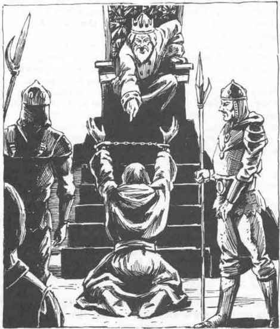

奈罗夫·加斯加尔 · Nerof Gasgal
奈罗夫·加斯加尔 Nerof Gasgal
灰鹰自由城的市长
 |
|
奈罗夫·加斯加尔出生于灰鹰城最肮脏的地区之一，父母极度贫穷却十分自尊。尽管父母尽力劝阻，奈罗夫仍崇拜盗贼公会的盗贼。他钦佩他们的勇气、技巧，尤其是他们的财富。父母在他十岁那年悲惨地饿死后，他决定改变自己的命运；一位公会官员亲友资助了他，于是他拜入盗贼公会门下。
奈罗夫成为正式盗贼后迅速晋升，以对行动每一个细节都进行细致规划而闻名。他相信绝不能把任何事交给运气，会反复研究目标建筑的计划和模型，直到可以凭记忆画出完整的平面图。他的周密和对细节的关注使上司和同僚都喜欢他，但也使他成为被派到手下工作的学徒与低级盗贼的梦魇。他不能容忍疏漏或错误。
之后，一次创伤经历使加斯加尔改变了职业，也改变了人生方向。他在洗劫一座法师早已废弃的城堡时，踩中了魔法陷阱，发现自己正在一根通风竖井中坠落。幸运的是，陷阱只是幻觉，但同伴发现他陷入紧张性木僵状态，把他带回灰鹰城。牧师的帮助救了他，但他开始严重眩晕，并产生了恐高症。那次事件使加斯加尔决定放弃盗贼生涯，投身政治。
奈罗夫从未在公众面前被知道是盗贼；对公众而言，他只是经营着一家面向灰鹰富裕年轻人的赌博屋。尽管赌局赔率明目张胆地偏向庄家，奈罗夫仍深受新晋富裕阶层欢迎。他早就被劝说从政，并得到顾客们的支持保证；当残疾迫使他退出盗窃时，他接受了他们提供的政治支持，也由此发现了其中的机遇。作为市长，奈罗夫很受欢迎，也很受尊敬。他对细节的关注使任何不受他青睐的人都很难欺骗或压迫市民。他对员工要求很高，却不会放过自己，通常每天工作十二小时。他毫不避讳地收受贿赂，但他的理论是：“让双方都行贿，然后根据案情本身的优点来裁决。”
他作为灰鹰市长的目标，是让城市尽可能顺畅地运转，并被记住为城史上最好的市长。他的私人目标则不同：他想成为贵族的一员。然而，老富人并不以新富人的眼光看待他；上层阶级在敢于如此做的范围内尽力冷落他，因为他的口音属于下层阶级，而且他的财富来源（赌博屋）“粗俗”。
贵族暗中嘲笑他，但没有人忘记某个愚蠢到公开蔑视他的富裕家族遭遇了什么：盗贼一次又一次袭击他们的宅邸；几名家族成员神秘死亡；他们的商业竞争者表现出对其商业计划不可思议的了解。这种情况一直持续到整个家族沦为乞丐。
奈罗夫·加斯加尔是一个英俊迷人的男人，身高 5 英尺 9 英寸，头发已经花白。他穿着剪裁保守却极其昂贵的衣服。他看起来是个值得信赖、能力出众的商人，从政只是为了他深爱的城市。
奈罗夫的办公室配备了许多奢侈品：厚重的帷幔（遮住他的办公室位于地面上方数层楼这一事实）、几名漂亮的秘书，以及一只巨大而精致的保险箱，里面存放着全城档案和大量有用的信息，可以用来勒索那些他不愿诉诸武力对付的麻烦制造者。
他的皮甲品质上乘，是皮革工匠公会会长特意为他制作的；当时他刚刚在皮革严重短缺期间免除了皮革工匠的税款。他的武器品质同样尽可能优良，是盗贼公会会长在他当选公职时专门偷来送给他的礼物。他还拥有一套盗贼工具，并且仍定期练习所有不涉及攀爬的盗贼技能。他可以接触到许多魔法物品，但除非确实需要，否则不会把许多物品留在手边。他认为依赖魔法工具或武器会使自己过于脆弱。奈罗夫使用魔法物品时，偏爱那些能帮助盗窃、却不涉及飞行或攀爬的物品。在他的办公室或保险箱中找到此类物品的概率为 20%。
除政治之外，奈罗夫的兴趣仅限于他仍然拥有的赌博屋，以及磨炼盗贼技能；他没有其他真正的兴趣。虽然他是个想跻身上流社会的人，却觉得社交聚会并不有趣——他参加聚会只是为了获取信息。他与城里的公会会长们保持良好关系，这是所有市长都必须做的，但他唯一会与之社交的，是盗贼公会会长。他们经常共度夜晚，喝着葡萄酒，谈论在达到如今地位以前的“美好旧日”。奈罗夫仍是盗贼公会中的一股力量，并拥有副公会会长的头衔。
玩家角色可能以多种方式遇到奈罗夫·加斯加尔。他们可能是来与灰鹰市长处理事务的邻国使者，也可能是来寻求他专业建议的低级盗贼。如果任何玩家角色拥有关于灰鹰外部威胁的信息，奈罗夫会为此支付丰厚报酬。他也有兴趣购买任何魔法物品，尤其是盗贼会使用的物品，例如敏捷手套或开门钟。
如果玩家角色是灰鹰的敌人，他们会发现奈罗夫是个致命的敌手。他与刺客公会会长保持密切关系。几名刺客在他的私人薪俸名单上；众所周知，他会利用他们悄悄消除威胁。
上一节：灰鹰自由城 · The Free City of Greyhawk
下一节：德里德·范申 · Derider Fanshen